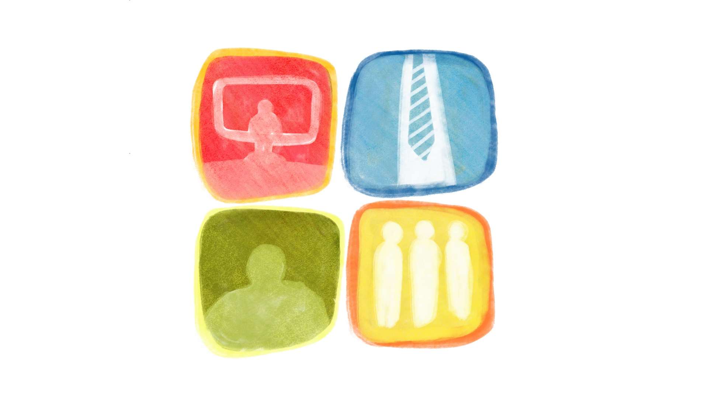

Kaha Mind
The
Dossier
July

Editor's Note
Welcome to this month's issue of The Dossier, where we translate emerging psychological research into insights for therapeutic practice.
Consider a familiar workplace question:"Can this person adapt to the way we work?"
Now consider a different one: "How much of the way we work was designed around one particular kind of brain?"
Most workplaces are built around largely unspoken expectations like communicating in conventional ways, sustaining attention in particular environments, navigating ambiguous instructions, performing well in unstructured interviews, adapting quickly to change, and demonstrating competence through socially familiar behaviours. For neurodivergent employees, these expectations can create barriers that are often mistaken for individual shortcomings. A person may be described as difficult to communicate with, inflexible, distracted, or poorly suited to a role. However, the more important question may be whether the workplace has made room for different ways of processing information, communicating, and working.
Over the past two decades, conversations about neurodiversity have increasingly moved beyond advocacy and healthcare into schools, workplaces, and public discourse. This reflects an important shift: neurodevelopmental differences are increasingly being understood not only through the lens of disorder, but also as variations in human cognition. Yet awareness alone does not create inclusion. When neurodiversity is overlooked, the consequences may extend beyond individual well-being. Workplaces may also lose opportunities to recognise different strengths, perspectives, and ways of solving problems, potentially affecting work quality, innovation, and organisational outcomes.
This month's issue examines a recent scoping review by Nair and colleagues (2025), which synthesises research on neurodiversity and employment to understand where these gaps lie. Rather than focusing on a single diagnosis or intervention, the authors map the broader landscape of neurodivergent experiences at work while highlighting the psychosocial, organisational, and systemic factors that shape them. The review also identifies emerging directions for creating more neuroinclusive workplaces, including workplace accommodations that leverage neurodivergent strengths. Ultimately, this review invites us to move beyond asking how neurodivergent individuals can fit into existing workplaces, towards considering how psychologists and workplaces themselves can become more responsive to diverse ways of thinking, communicating, and working.
Article in Focus
Nair, V. S., Kumar, S., & Bhargava, S. (2025). Mapping the lacunae between neurodivergent individuals and work organizations. Acta Psychologica, 258, 105133. https://doi.org/10.1016/j.actpsy.2025.105133
Key Takeaways
- Workplace inclusion requires both individual support and systemic change.The review suggests that many challenges experienced by neurodivergent employees emerge from the interaction between their neurocognitive profiles and workplace environments. As a result, meaningful inclusion extends beyond individual accommodations and requires changes to recruitment practices, HRM policies, leadership approaches, workplace design, communication norms, and organisational culture.
- Neurodivergence brings strengths as well as support needs. Neurodivergent employees contribute valuable strengths such as pattern recognition, creativity, attention to detail, innovative thinking, and sustained focus, which are best supported by strengths-based and flexible workplace practices.
- Managers play a critical but understudied role in inclusion.The review identifies a significant gap in understanding managers' experiences and preparedness in supporting neurodivergent employees, highlighting the need for leadership training and neurodiversity informed management practices.
- The field is moving towards neurodiversity-affirming frameworks. Contemporary research increasingly conceptualises neurodiversity as a natural variation in human cognition and advocates for biopsychosocial, social, and neurodiversity paradigms that recognise both individual differences and environmental influences.
- There remains a need for broader and more inclusive research. Existing literature disproportionately focuses on autism and Western contexts, underscoring the need for interdisciplinary, culturally informed, and globally representative research on neurodiversity and employment.
What’s in a word?
1. Neurodiversity: Neurodiversity is the concept that there is no single correct way for a human brain to work. It describes the existence of a natural, beneficial variation in cognitive function, learning, and behavior across all people.
2. Neurodivergent: Neurodivergent refers to individuals whose cognitive functioning deviates from the societal norm. It is often used interchangeably with "neurominority." Neurodivergence can include autism, ADHD, dyslexia, dyspraxia, Tourette's syndrome, dyscalculia etc among other conditions where cognitive functioning differs from what is considered typical.
3. Neurominority: Neurominority is a more neutral way to describe neurodivergent people, highlighting that they are a statistical minority rather than a deficient version of the norm.
4. Neurotypical: Neurotypical individuals are those whose neurological development and cognitive functioning align with the dominant societal standards or "typical" developmental milestones.
Article in a Nutshell
Much of the psychological literature on neurodiversity has historically focused on childhood, education, diagnosis, and early intervention. These areas remain important, but they represent only one part of the lifespan. For many neurodivergent individuals, entering the workforce introduces a new set of demands like navigating recruitment processes, workplace hierarchies, social expectations, sensory environments, performance evaluations, and decisions about disclosure. A person may have received accommodations in school or university, yet enter a workplace where their needs are misunderstood.This makes neurodiversity at work an increasingly important area of research and practice.
The Study
Against this backdrop, Nair and colleagues (2025) conducted a scoping review to examine how neurodiversity has been understood within workplace and Human Resource Management (HRM) research over the past decade. Through a comprehensive review of the literature, the authors explore neurodivergent individuals' experiences of work, the challenges surrounding workplace inclusion, and the ways organisations can better support cognitive diversity. The authors focused on two broad questions:
1. What barriers prevent neurodivergent individuals from fully participating in the workforce, and what organisational practices can better support meaningful inclusion?
2. How can existing research inform future HRM practices, organisational policies, and research on neurodiversity and employment?
The Method
The researchers conducted a scoping review following Arksey and O'Malley's methodological framework and reported their selection process using the PRISMA-ScR guidelines. Electronic searches identified 60 potentially relevant articles published between 2013 and 2023. Following further screening, 17 studies were finally included in the study.
The included studies represented research from the United States, United Kingdom, Poland, Australia, and the Netherlands. Using reflexive thematic analysis, the authors synthesised the literature into six overarching psychosocial domains that capture current understandings of neurodiversity in the workplace.
The Findings
The review identified major themes that together capture how neurodiversity is currently understood within workplace and HRM research:
- Conceptualising Neurodiversity: Across the reviewed literature, there has been a noticeable shift in how neurodiversity is understood. Rather than viewing conditions such as autism and ADHD solely through a deficit-based or medical lens, many authors conceptualised neurodiversity as a natural variation in human cognition. This perspective emphasises differences rather than deficits and encourages organisations to recognise both the strengths and support needs associated with diverse neurocognitive profiles.
- Employment Barriers: Despite growing awareness of neurodiversity, significant barriers to employment remain. Traditional recruitment processes often rely heavily on social communication, unstructured interviews, and implicit workplace norms that may disadvantage neurodivergent applicants. Once employed, challenges such as sensory overload, difficulties with time management, emotional regulation demands, and limited workplace accommodations can further affect participation and career progression. The review suggests that many of these barriers could be reduced through more accessible recruitment practices and workplace adjustments.
- Fear, Stigma, and Concealment: A recurring theme across the literature was the experience of stigma and fear within workplace settings. Many neurodivergent individuals reported concerns about being judged, misunderstood, or discriminated against because of their differences. As a result, decisions about whether to disclose a diagnosis can become complex and emotionally taxing. The review highlights that fear of rejection, uncertainty about workplace responses, and pressure to conform to neurotypical expectations can negatively affect psychological well-being, workplace belonging, and employment outcomes.
- Workplace Challenges: Several studies emphasised that workplace difficulties often emerge from a mismatch between organisational systems and neurodivergent needs rather than from neurodivergence alone. Challenges included navigating organisational change, adapting to sensory demands, understanding unwritten workplace expectations, and accessing opportunities for professional development. Recruitment and retention were also identified as ongoing concerns. Some authors suggested that relatively simple modifications, such as providing interview questions in advance or creating more structured communication processes, could help reduce these barriers.
- Strengths and Enabling Practices: Alongside challenges, the literature consistently highlighted the strengths that neurodivergent individuals can bring to organisations. These included attention to detail, pattern recognition, creativity, innovative thinking, precision in task performance, and the ability to focus intensely on areas of interest. The review identified several practices that help organisations leverage these strengths, including flexible work arrangements, workplace accommodations, supportive leadership, assistive technologies, strengths-based recruitment approaches, coaching, and tailored training opportunities. Importantly, the authors note that these practices may benefit not only neurodivergent employees but also organisational productivity, innovation, and workforce diversity more broadly.
Limitations
The following should be kept in mind when interpreting the study's findings:
- The review is limited to peer-reviewed academic literature.The authors note that by focusing only on peer-reviewed articles, they may have missed valuable insights from dissertations, news media, industry reports, and other grey literature where workplace neurodiversity initiatives are often discussed.
- The review was not interdisciplinary in scope.Although the topic of neurodiversity at work is covered in different fields like psychology, HRM, sociology, law, business, and even biological sciences, this review primarily draws from psychology and organizational behaviour literature. The authors recommend more interdisciplinary work in the future.
Practical Toolkit
Based on this research's findings, following are some steps that therapists, organisations and organisational behaviour (OB) psychologists can put into action right away.
Clinical Toolkit For Therapists
- Explore what the environment demands of clients. When a client presents with workplace distress, it helps to explore not only their symptoms but the conditions under which they are working.
- What parts of the day require the most effort?
- Are there moments where the client feels they are constantly monitoring or modifying themselves?
- What kinds of communication come easily, and what kinds do not?
- What happens when plans shift without warning, and which environments seem to bring out their best functioning?
- Explore the hidden workload of masking and compensation. Some clients meet workplace expectations, but only at real psychological cost. It might be helpful to ask what it actually takes for a client to appear as though they are coping. For many, this includes rehearsing conversations in advance, suppressing sensory discomfort, constantly monitoring their own social behaviour, forcing eye contact, hiding the need for breaks, or spending long stretches of time recovering once the day is over. The useful question is rarely about whether a client is functioning. It is what that functioning is costing them.
- Move from “what is wrong with me” to “what conditions help me function.” Therapy can support clients in identifying their own cognitive and sensory strengths, the situations that enhance or reduce their functioning, their communication preferences, their environmental needs, the early signs of overload, and realistic accommodations. The goal here is not to help clients become more "normal" at work. It is to help them understand themselves well enough to make informed choices about the environments and supports they need.
- Support self-advocacy without treating disclosure as mandatory. Disclosure is not automatically the right choice for every client, and it should not be treated as though it always is. Therapists can help clients think through what they stand to gain from disclosing, what risks it might carry in their particular workplace, who would be safest to approach, what support they actually need, and whether the change they want can be requested without naming a diagnosis. This keeps the decision resting with the client, rather than assuming that disclosure is inherently the empowering choice.
- Reframe burnout as a possible mismatch. When a client keeps struggling at work despite real effort, it can help to ask whether the problem is one of capacity or of fit. Often, the honest answer is both. A neuroaffirmative formulation makes room to hold individual challenges and environmental barriers together, without collapsing the client into either explanation alone.
Organisational Toolkit

The role of organisations in supporting neurodiversity goes way beyond having a written policy. Here's a few things organisations can keep in mind to make their workplace more neuroaffirmative.
- Before hiring. Asking whether job descriptions lean too heavily on vague traits like “excellent interpersonal skills,” whether candidates could demonstrate their competence through actual work samples instead, whether interviews are structured and predictable rather than freewheeling, and whether what is being evaluated is job relevant.
- During employment. It might be helpful to reflect on certain practices.
- Are communication expectations made explicit?
- Are instructions available in writing?
- Is flexibility treated as a legitimate way to design work, rather than a favour granted to a few?
- Are sensory environments given any thought at all, and can employees request adjustments without wading through excessive bureaucracy?
- For managers. Training needs to go further than simply learning to "recognise neurodiversity." Managers need to know how to respond well in the moment, whether an employee is disclosing a neurodivergence, requesting an accommodation, communicating in an unfamiliar way, struggling through a period of organisational change, or bringing strengths that do not neatly fit conventional performance expectations.
- For leads. As policy makers and those who have the biggest stake in decision making, the question one must keep asking is whether employees are only being asked to adapt to the workplace, or whether the workplace is also being examined for what it might need to adapt to.
Did You Know?
Several global organisations are increasingly adopting neurodiversity-focused hiring initiatives, such as SAP's Autism at Work initiative and Microsoft's Neurodiversity Hiring Program to create more inclusive workplaces. These initiatives recognise that conventional hiring practices, such as unstructured interviews, ambiguous job descriptions, and reliance on social communication skills, often disadvantage autistic candidates despite their strong abilities.
Many organisations are now expanding this approach beyond autism to include a broader range of neurodivergent employees, recognising that inclusive workplaces benefit both individuals and organisations.
Toolkit For Organisational Psychologists
- Audit the organisation's definition of competence. What behaviours actually get rewarded, in practice rather than on paper? It is worth asking whether employees are being rewarded for speaking quickly, for being highly socially expressive, for being available at all hours, for attending meetings in person, for networking, or for appearing confident, and whether any of these are standing in for competence itself.
- Examine the stage at which neurodivergent employees exit. Mapping the employee journey, from recruitment through selection, onboarding, performance management, promotion, and retention, makes it possible to ask at each stage where neurotypical norms might be creating unnecessary barriers.
- Measure inclusion through experience, not policy. Rather than asking whether a neurodiversity policy exists, it is more revealing to collect feedback on whether employees feel safe disclosing, whether managers actually know how to respond, whether accommodations are genuinely accessible rather than theoretical, whether employees experience real career progression, whether they feel they belong, and whether they are more likely to leave. This shifts organisational inclusion from something written down to something lived.
- Avoid turning neurodivergent strengths into another performance demand. This is a nuance that often gets lost in these conversations. Neurodivergent employees should not be reduced to shorthand, the idea that people with autism are simply good at detail, that people with ADHD are simply creative, that neurodivergent people are innovative as a category. A genuinely strengths-based approach asks what this particular individual brings, and what conditions allow those strengths to emerge. Strengths are not available on demand, and they should never quietly become one more expectation an employee has to perform.
What's Coming Next: Save the Date
Stay tuned for our next Dossier issue in August! In the meantime, we welcome your input. If you have ideas for research questions or areas you would like the digest to explore, please share them with us at research@kahamind.com.
References
Arksey, H., & O'Malley, L. (2005). Scoping studies: towards a methodological framework. International Journal of Social Research Methodology, 8(1), 19–32. https://doi.org/10.1080/1364557032000119616
Antony, S., Ramnath, R., & Ellikkal, A. (2024). Empowering neuro-diversity: A neuroaffirmative approach to workplace coaching. International Coaching Psychology Review, 19(1).
Miller, C. (2026, January 29). What is neurodiversity? Child Mind Institute. https://childmind.org/article/what-is-neurodiversity/
Nair, V. S., Kumar, S., & Bhargava, S. (2025). Mapping the lacunae between neurodivergent individuals and work organizations. Acta Psychologica, 258, 105133. https://doi.org/10.1016/j.actpsy.2025.105133
Tricco, A. C., Lillie, E., Zarin, W., O'Brien, K. K., Colquhoun, H., Levac, D., ... & Straus, S. E. (2018). PRISMA extension for scoping reviews (PRISMA-ScR): checklist and explanation. Annals of Internal Medicine, 169(7), 467–473. https://doi.org/10.7326/M18-0850